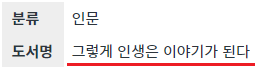
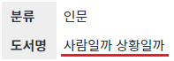

DataMap의 함수 'setJSON'와 함수 'reform'의 예제입니다. 함수 'setJSON'은 JSON 형식의 데이터로 DataMap의 데이터를 할당할 수 있습니다. DataMap에 정의되지 않은 'Key'는 무시됩니다. 함수 'reform'은 DataMap의 상태를 초기화하고 현재의 데이터를 원본 데이터로 설정합니다.
함수 'setJSON'으로 할당된 데이터는 원본 데이터로 지정되지 않기 때문에, 원본 데이터로 지정하기 위해서는 함수 'reform'을 함께 사용해야 합니다.
JSON 형식의 데이터를 할당하고 원본 데이터로 지정하기
화면에 구성된 버튼을 순서대로 클릭하여 테스트합니다.
STEP 1. 초기 상태를 확인합니다.
다음은 DataMap에 할당된 데이터입니다.
JSON 형식의 데이터
{
"categoryLabel": "인문",
"label": "내가 틀릴 수도 있습니다"
}DataMap의 데이터를 화면의 폼에 연결하여 출력하고 있습니다. DataMap의 데이터가 변경되면 화면의 출력 데이터도 변경됩니다.
그림 1.브라우저(Chrome) 실행 예시
STEP 2. 수정된 'key' 목록을 확인합니다.
버튼 1. 변경된 데이터의 'key' 목록 반환받기을 클릭합니다.
STEP 3. 실행 결과를 확인합니다.
DataMap의 변경된 데이터의 'key' 목록이 '로그 확인' 영역과 브라우저 개발자 도구 콘솔에 출력됩니다. 변경된 데이터가 없기 때문에 빈 배열이 반환됩니다.
로그
[04:43:02] # 스크립트 dma_exam1.getModifiedKey(); 반환 값: []
STEP 4. JSON 형식의 데이터를 할당합니다.
버튼 2. 스크립트로 데이터(도서명) 할당하기을 클릭합니다.
STEP 5. 실행 결과를 확인합니다.
도서명이 '그렇게 인생은 이야기가 된다'로 변경됩니다.
그림 2.브라우저(Chrome) 실행 예시

STEP 6. 수정된 'key' 목록을 확인합니다.
버튼 3. 변경된 데이터의 'key' 목록 반환받기을 클릭합니다.
STEP 7. 실행 결과를 확인합니다.
DataMap의 변경된 데이터의 'key' 목록이 '로그 확인' 영역과 브라우저 개발자 도구 콘솔에 출력됩니다.
로그
[04:46:39] # 스크립트 dma_exam1.getModifiedKey(); 반환 값: ["label"]
STEP 8. JSON 형식의 데이터를 할당하고 원본 데이터로 지정합니다.
버튼 4. 스크립트로 데이터(도서명) 할당하고 원본 데이터로 지정하기을 클릭합니다.
STEP 9. 실행 결과를 확인합니다.
도서명이 '사람일까 상황일까'로 변경됩니다.
그림 3.브라우저(Chrome) 실행 예시

STEP 10. 수정된 'key' 목록을 확인합니다.
버튼 5. 변경된 데이터의 'key' 목록 반환받기을 클릭합니다.
STEP 11. 실행 결과를 확인합니다.
DataMap의 변경된 데이터의 'key' 목록이 '로그 확인' 영역과 브라우저 개발자 도구 콘솔에 출력됩니다. 할당된 데이터가 원본 데이터로 지정되었기 때문에 빈 배열이 반환됩니다.
로그
[04:50:33] # 스크립트 dma_exam1.getModifiedKey(); 반환 값: []
DataMap의 함수 'setJSON', 'reform'을 이용하여 스크립트를 작성합니다. 세부 설명은 아래의 스크립트 예시에 작성되었습니다.
스크립트
// 이 예시는 예제 파일에서는 스크립트 'scwin.btn_exam2_1_onclick'에 작성되어 있습니다. // DataMap 'dma_exam1'에 key 'label'의 값을 할당합니다. dma_exam1.setJSON({ "label": "사람일까 상황일까" }); // DataMap 'dma_exam1'의 현재 데이터를 원본(Original) 데이터로 지정합니다. 데이터의 상태 값은 모두 초기화됩니다. dma_exam1.reform();
setJSON( jsonData )
reform( )
[웹스퀘어5 SP5 개발 가이드] DataMap
링크 : https://docs1.inswave.com/sp5_user_guide/e8b94a03286e4f9f#fb44ab6371dd8b59